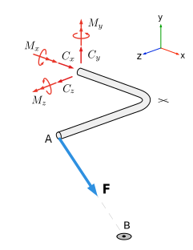

Section 5.5 3D Rigid Body Equilibrium
Key Questions
What are the similarities and differences between solving two-dimensional and three-dimensional equilibrium problems?
Why are some three-dimensional reaction couple-moments “available but not engaged”?
What kinds of problems are solvable using linear algebra?
Three-dimensional systems are closer to reality than two-dimensional systems and the basic principles to solving both are the same, however they are generally harder solve because of the additional degrees of freedom involved and the difficulty visualizing and determining distances, forces and moments in three dimensions.
Three-dimensional problems are usually solved using vector algebra rather than the scalar approach used in the last section. The main differences are that directions are described with unit vectors rather than with angles, and moments are determined using the vector cross product rather scalar methods. Because they have more possible unknowns it is harder to find efficient equations to solve by hand. A problem might involve solving a system of up to six equations and six unknowns, in which case it is best solved using linear algebra and technology.
Resolving Forces and Moments into Components.
To break two-dimensional forces into components, you likely used right-triangle trigonometry, sine and cosine. However, three-dimensional forces will likely need to be broken into components using Section 2.5.
When summing moments, make sure to consider both the \(\vec{r}\times\vec{F}\) moments and also the couple-moments with the following guidance:
First, choose any point in the system to sum moments around.
-
There are two general methods for summin gthe \(\vec{r}\times\vec{F}\) moments. Both techniques will give you the same set of equations.
-
Sum moments around each axis.
For relatively simple systems with few position and force vector components, you can find the cross product for each non-parallel position and force pair. Using this method requires you to resolve the direction of each cross product pair using the right-hand rule as covered in Chapter 4. Recall that there are up to six pairs of non-parallel components that you need to consider.
-
Sum all moments around a point using vector determinants.
Choose a point in the system which is on the line of action of as many forces as possible, then set up each cross product as a determinant. After computing the components coming from each determinant, combine the \(x\text{,}\) \(y\text{,}\) and \(z\) terms into each of the \(\Sigma\vec{M}_x=0\text{,}\) \(\Sigma\vec{M}_y=0\text{,}\) and \(\Sigma\vec{M}_z=0\) equations.
-
Sum moments around each axis.
Finally, add the components of any couple-moments into the corresponding \(\Sigma\vec{M}_x=0\text{,}\) \(\Sigma\vec{M}_y=0\text{,}\) and \(\Sigma\vec{M}_z=0\) equations.
Solving for unknown values in equilibrium equations.
Once you have formulated \(\Sigma\vec{F}=0\) and \(\Sigma\vec{M}=0\) equations in each of the \(x\text{,}\) \(y\) and \(z\) directions, you could be facing up to six equations and six unknown values.
Frequently these simultaneous equation sets can be solved with substitution, but it is often be easier to solve large equation sets with linear algebra. Note that the adjective “linear” specifies that the unknown values must be linear terms, which means that each unknown variable cannot be raised to a exponent, be an exponent, or buried inside of a \(\sin\) or \(\cos\) function. Luckily, most unknowns in equilibrium are linear terms, except for unknown angles. If you are not familiar with the use of linear algebra matrices to solve simultaneously equations, search the internet for Solving Systems of Equations Using Linear Algebra and you will find plenty of resources.
No matter how you choose to solve for the unknown values, any numeric values which come out to be negative indicate that your initial hypothesis of that vector’s sense was incorrect.
Three-dimensional Equilibrium Examples.
Example 5.5.1. 3D Bent Bar.
The bent bar shown is held in a horizontal plane by a fixed connection at \(C\) while cable \(AB\) exerts a \(\lb{500}\) force on point \(A\text{.}\)
Given \(A = (4,4,5)\) \(B = (6,0,4)\) and \(C = (0,4,0)\text{.}\)
Find the reaction force \(\vec{C}\) and concentrated moment \(\vec{M}\) with components \(M_x\text{,}\) \(M_y\) and \(M_z\) required to hold the bar in this position under this condition,
-
Draw a free-body diagram.
As always, begin by drawing a free-body diagram.
 -
Determine the force acting at point \(A\) in Cartesian form.
The force of the cable acts from \(A\) to \(B\text{.}\) This direction is described by the displacement vector from \(A\) to \(B\)
\begin{equation*} \vec{r}_{AB} = \ft{(2 \ihat- 4 \jhat - 1 \khat )} \end{equation*}or the corresponding unit vector
\begin{align*} \lambda_{AB} \amp = \frac{\vec{r}_{AB}}{\left|\vec{r}_{AB}\right|} \\ \amp = \frac{2 \ihat- 4 \jhat - 1 \khat}{\sqrt{(2)^2 + (-4)^2 + (-1)^2 }}\\ \amp = \frac{2 \ihat- 4 \jhat - 1 \khat}{\sqrt{21}} \text{.} \end{align*}Multiplying the unit vector by the cable tension gives the force acting on \(A\) as a three-dimensional Cartesian force vector
\begin{align*} \vec{F} \amp = \lambda_{AB} T \\ \amp = \left( \frac{2 \ihat - 4\jhat- 1 \khat}{\sqrt{21}} \right) \lb{500}\\ \amp = \left( 2 \ihat - 4\jhat- 1 \khat \right) \lb{\left(\frac{500}{\sqrt{21}}\right)} \end{align*}\begin{equation*} \vec{F} = \lb{(218 \ihat - 436 \jhat - 109 \khat)}\text{.} \end{equation*} -
Determine the moment about \(C\).
The moment about point \(C\) is found with the cross product (4.4.1) where the moment arm is the displacement vector from \(C\) to \(A\text{.}\)
\begin{equation*} \vec{r}_{CA} = \ft{(4 \ihat- 0 \jhat - 5 \khat )} \end{equation*}\begin{align*} \vec{M}_C \amp = \vec{r}_{CA} \times \vec{F} \\ \amp = \begin{vmatrix} \ihat \amp \jhat \amp \khat \\ 4 \amp 0 \amp 5 \\ 2 \amp -4 \amp -1 \\ \end{vmatrix} \left(\frac{500}{\sqrt{21}}\right) \end{align*}\begin{equation*} \vec{M}_C = \ftlb{(2182 \ihat + 1528 \jhat - 1746 \khat)} \end{equation*} -
Apply the equations of equilibrium.\begin{align*} \Sigma \vec{F} \amp = 0 \qquad \begin{cases} \Sigma F_x = 0 : \amp C_x + F_x = 0 \\ \amp C_x = - \lb{218} \\ \Sigma T_y = 0 :\amp C_y - F_y = 0 \\ \amp C_y = + \lb{436} \\ \Sigma T_z = 0 : \amp C_z - F_z = 0 \\ \amp C_z = + \lb{109} \\ \end{cases}\\ \\ \Sigma \vec{M} \amp = 0 \qquad \begin{cases} \Sigma M_x = 0 :\amp M_x + {M_C}_x = 0 \\ \amp M_x = \ftlb{-2180} \\ \Sigma M_y = 0 : \amp M_y + {M_C}_y = 0 \\ \amp M_y = \ftlb{-1530} \\ \Sigma M_z = 0 : \amp M_z +{M_C}_z = 0 \\ \amp M_z = \ftlb{+1750} \\ \end{cases} \end{align*}
The resulting vector equations for the reaction force \(\vec{C}\) and reaction moment \(\vec{M}\) are
\begin{align*} \vec{C} \amp= \lb{(-218 \ihat + 436 \jhat + 109 \khat)}\\ \vec{M} \amp = \ftlb{(-2180 \ihat -1530 \jhat + 1750 \khat)}\text{.} \end{align*}